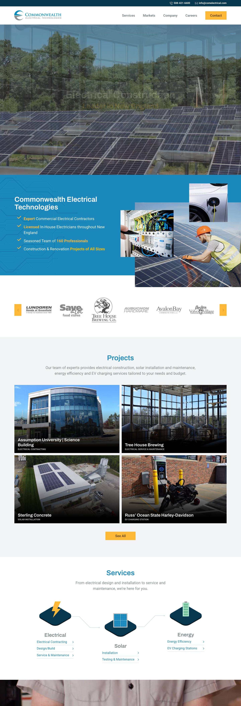
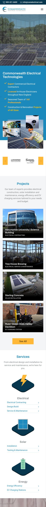
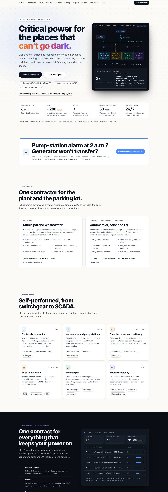
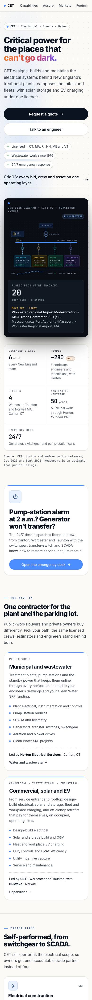

CET designs, builds and maintains the electrical systems behind New England’s treatment plants, campuses, hospitals and fleets, with solar, storage and EV charging under one licence.
One-line diagram · Site 07 · Worcester Countyillustrative
Public bids we’re tracking
—open bids · 6 states
Loading the New England bid radar…
Licensed states6of 6Every New England state
People~280est.Electricians, engineers and technicians, with Horton
Offices4Worcester, Taunton and Norwell MA; Canton CT
Wastewater heritage50yearsMunicipal work through Horton, founded 1976
Emergency desk24/7Generator, switchgear and pump-station calls
Source: CET, Horton and NuWave public releases, Oct 2025 and Sept 2026. Headcount is an estimate from public filings.
Pump-station alarm at 2 a.m.? Generator won’t transfer?
The 24/7 desk dispatches licensed crews from Canton, Worcester and Taunton with the switchgear, transfer-switch and SCADA know-how to restore service, not just reset it.
comelectrical.com as captured on October 8, 2026, beside this concept. Scroll inside a frame to see the whole page.
Before The site today
comelectrical.com


comelectrical.com, home page, captured October 8, 2026.
After This concept
Concept · CET


This concept, home page, October 2026. Figures marked illustrative or est. are not company data.
What changes
Two clear ways in. Request a quote and the 24/7 emergency line sit in the first screen, and the form routes each request to the right desk.Qualified quote requests: +50%est. in two quarters
Public work, shown. Funding programs and the six-state footprint map speak to engineers of record.Bid win rate on public work: 15% (industry) to 30%est.
Service after the project. Assure turns finished projects into annual monitoring and maintenance contracts.Recurring service share of revenue: to 25%est.
Uptime in operators’ terms. The Assure band reports solar and storage fleets the way owners track them.Solar fleet availability: 94.7% (industry) to 99.1%est.
Source: Before screenshots of comelectrical.com, October 8, 2026; CET growth plan, OS program evidence and this page’s design rationale, October 2026.
Two ways in
One contractor for the plant and the parking lot.
Public-works buyers and private owners buy differently. Pick your path; the same licensed crews, estimators and engineers stand behind both.
Public works
Municipal and wastewater
Treatment plants, pump stations and the standby power that keeps them online through every nor’easter, scoped to your engineer’s drawings and your Clean Water SRF funding.
From service entrance to rooftop: design-build electrical, solar and storage, fleet and workplace charging, and efficiency retrofits that pay for themselves, on occupied, operating sites.
Design-build electrical
Solar and storage build and O&M
Fleet and workplace EV charging
LED, controls and HVAC efficiency
Utility incentive capture
Service and maintenance
Led by CET · Worcester and Taunton, with NuWave · NorwellCapabilities →
Capabilities
Self-performed, from switchgear to SCADA.
CET self-performs the electrical scope, so owners get one accountable trade partner instead of four.
CET
Electrical construction
Design-build and bid-build power distribution, switchgear and motor control centers, lighting and controls for new construction and occupied facilities.
Design-buildMA 149A trade bidsSwitchgear
Horton
Wastewater and pump stations
Plant electrical and instrumentation, drives, pump-station rebuilds and SCADA integration, sequenced so the plant never stops treating.
InstrumentationSCADAWet-well rated
CET · Horton
Standby power and resiliency
Generator sizing and installation, automatic transfer switches, load-bank testing and microgrid controls for loads that cannot drop.
GeneratorsTransfer switchesMicrogrids
CET · Horton
Solar and storage
Rooftop, canopy, ground-mount and landfill solar with battery storage, utility interconnection and O&M backed by monitored uptime.
BuildBattery storageO&M
CET
EV charging
Level 2 and DC fast charging for fleets, depots, campuses and towns: make-ready, installation, commissioning and network operations.
DC fast chargingFleet depotsOn-street
NuWave
Energy efficiency
LED and controls retrofits, HVAC and process-load tuning, utility-incentive paperwork and measured savings you can show a board.
LED and controlsIncentivesMeasured savings
CET Assure · runs on GridOS
One contract for everything that keeps your power on.
CET Assure bundles inspection, maintenance, monitoring and 24/7 response for pump stations, generators, solar and EV chargers in one contract.
Inspect and testScheduled maintenance, infrared scans, load-bank and transfer tests on a calendar you can see.
MonitorSCADA, inverter and charger alarms watched by GridOS; each alarm opens a work order automatically.
Respond24/7 dispatch with the parts and drawings already on the truck.
ReportMonthly uptime, energy and compliance reporting for your board, council or lender.
Source: CET opportunity radar (public bid boards and state Clean Water SRF lists), Sept 2026. Open the demo →
Markets
Built for mission-critical buildings.
Where an outage means a permit violation, a cancelled surgery or a lost crop, owners need an electrical partner who plans for the failure before it happens.
Utility and grid
Distribution-side work, done to utility standards.
Interconnection, storage balance-of-plant, substation-adjacent electrical and grid-hardening builds for utilities, co-ops and the developers who sell to them.
What we deliver
Battery storage balance-of-plant and interconnection
Grid-resilience and microgrid builds
Traffic, street and on-street EV electrical
Programs that fund it
MA Section 83E storageNH GRANITECT Energy Resilience
1,000 MWMA Section 83E storage round now selecting
Dec 1CT DEEP resilience grants due
Municipal water
Plants and pump stations that never stop treating.
Horton has spent five decades inside New England’s treatment plants and lift stations. We phase electrical upgrades around live process, keep standby power tested and give operators SCADA they trust at 2 a.m.
What we deliver
Motor control center, switchgear and drive replacements
Pump-station generators, transfer switches and telemetry
Aeration-blower and energy-recovery electrical
Programs that fund it
CT Clean Water FundMA Clean Water SRFRI, ME and VT SRFMassDEP energy recovery
183treatment plants in CT, MA and RI we track
—with funded or requested projects
Higher education
Campus power that works between semesters.
We plan around academic calendars: switchgear and lighting upgrades over break, canopy solar on commuter lots and fleet charging for campus vehicles, without taking a dorm offline.
What we deliver
Campus distribution and building electrical
Parking-canopy solar and storage
Workplace and fleet EV charging
Programs that fund it
MA SMART 3.0DOER Leading by ExampleMassEVIPMass Save
Summershutdown windows planned 9 months out
Onecontract for solar, EV and electrical
Healthcare
Life-safety power with zero tolerance for gaps.
Hospitals and clinics run on essential electrical systems. We install and test generators and transfer equipment, document every test and sequence shutdowns with infection-control and clinical teams.
What we deliver
Essential-system generators and transfer switches
Documented monthly and annual testing
Imaging and operating-room circuit upgrades
Programs that fund it
Mass SaveCT Energy ResilienceUtility commercial incentives
24/7generator response
Loggedtransfer tests in your Assure report
Industrial
Production lines that come back up on schedule.
Manufacturers and distributors across New England bring us service upgrades, new lines, compressed-air and motor efficiency, and rooftop solar that offsets peak demand charges.
What we deliver
Service upgrades and new-line power
Motor, drive and compressed-air efficiency
Rooftop solar to shave demand charges
Programs that fund it
Mass SaveCT NRESMA SMART 3.0
Weekendcut-overs as standard
Measuredsavings on every efficiency project
Cultivation and controlled environment
Grow rooms where lighting is the largest bill.
Cultivators and controlled-environment farms run lights and dehumidification nearly around the clock. NuWave designs LED, controls and HVAC retrofits that cut kWh and heat load, then proves it with metered savings.
What we deliver
Horticultural LED and dimming controls
Dehumidification and HVAC load reduction
Service and panel capacity upgrades
Programs that fund it
Mass SaveUtility custom incentives
Meteredsavings, not spreadsheet savings
Design-buildwith incentive paperwork included
New England footprint
Licensed in all six states. Bidding in all six right now.
Four offices put a licensed crew near most of New England. The dots are public opportunities we are tracking; select a state.
All states
CET officeWater and pumpsElectrical and standbySolar and storageEVEfficiency
State · licenseOpen · tracked
Next deadlines
Loading…
HeadquartersWorcester, MA125 Blackstone River Rd. Electrical construction, estimating, solar and EV.
Southeast MATaunton, MA125 John Hancock Rd. South Coast and Cape crews, fleet charging.
NuWave Energy SolutionsNorwell, MAEnergy-efficiency design-build, incentives and measured savings.
Horton Electrical ServicesCanton, CTWastewater, pump stations, generators, solar O&M and 24/7 response.
Source: CET opportunity radar: CT DEEP Clean Water Fund, Maine DEP and Vermont Clean Water SRF lists, BidNet Direct and municipal portals, Sept 2026.
Funding and programs
Funding solved before the first site walk.
Public projects move when the money is lined up. We map each scope to the grant or fund that pays for it.
Wastewater work on SRF lists—est.Applicant project estimates on the lists we track
Programs we work in—Incentives, grants and procurements
Next deadline—Next program deadline
States covered6Six states’ funding rules, one estimating team
Source: Program pages and solicitations captured in the CET opportunity radar, Sept 2026. Mass Save is a utility-sponsored efficiency program; confirm current incentive levels with your utility.
Project stories
What “done right” looks like.
Three representative scopes across the CET family. They are composites written for this concept, not specific client engagements.
illustrativeHorton · CTClean Water Fund
Twelve pump stations, one resiliency program
A regional water-pollution-control authority needed standby power and telemetry at every lift station before hurricane season. Horton replaced generators and transfer switches station by station under bypass, then tied all twelve into one SCADA view.
12stations, no unplanned bypass
9 monotice to proceed to close-out
1SCADA screen for operators
illustrativeCET · MASMART 3.0
Commuter-lot canopy that pays the campus back
A Massachusetts university wanted carbon progress it could see. CET built parking-canopy solar with battery storage and Level 2 charging underneath, staged across two summers so the lots never fully closed.
1.2 MWcanopy solar
2 MWhstorage for peak shaving
48EV ports under canopy
illustrativeNuWave · MAMass Save
Grow-room retrofit with metered savings
A licensed cultivator was paying more for lighting than for rent. NuWave swapped legacy fixtures for dimmable horticultural LED, rebalanced dehumidification, captured utility incentives and metered the result for twelve months.
−38%lighting kWh, metered
<3 yrpayback after incentives
12 mosavings reporting
Safety and credentials
Licensed everywhere we work. Trained for what we touch.
Energized gear and live process plants leave no margin. Our safety program travels with every crew in all six states.
MALicensed
CTLicensed
RILicensed
NHLicensed
MELicensed
VTLicensed
Concept copy: a final site would verify and publish license numbers, safety rating and certifications with CET.
Arc-flash and NFPA 70EEnergized-work permits, PPE categories and labeled equipment on every service job.
Confined-space entryPermit-required entry for wet wells and vaults, with gas monitoring and rescue plans.
Lockout and tagoutWritten procedures coordinated with plant operators before every shutdown.
OSHA-trained supervisionOSHA 30 for foremen and superintendents; OSHA 10 for every field employee.
Public-bid readyPrequalification, bonding and certified-payroll packages for state and municipal work.
Secure SCADA workRemote access to water systems designed with network segmentation and least privilege by default.
Medium- and low-voltage switchgearDiesel and natural-gas generatorsAutomatic transfer switchesDrives and motor control centersPLCs and SCADAString and central invertersBattery storageLevel 2 and DC fast chargers
Careers
Build a career on the grid that’s being rebuilt.
Solar, storage, EV and water upgrades mean decades of work. Start as an apprentice, license in several states and run your own jobs.
Example roles for the concept; a live site would pull from the applicant-tracking system.
Acquisitions
Own an electrical or energy contractor in New England?
NuWave joined in 2025 and Horton in 2026. Both kept their names, people and customers.
Who we talk to
Electrical, solar, generator, controls and efficiency contractors
With BSP behind us, we are looking for the next family business that wants a partner rather than an exit. First conversations are confidential and owner to owner.